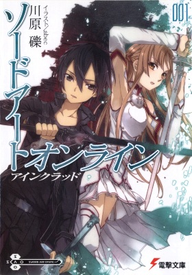

-

Sword Art Online
Sword Art Online (яп. ソードアート・オンライン со:до а:то онрайн?) — серия лайт-новел (ранобэ) японского писателя Рэки Кавахары с иллюстрациями художника, выступающего под псевдонимом abec. На основе романов выпускается манга, существует адаптация в формате Drama CD и несколько игр. Кроме того, с 7 июля по 24 декабря 2012 года на японском телевидении прошёл показ одноимённой аниме-адаптации романов[6], а 31 декабря 2013 года — специального эпизода длительностью сто одна минута, в котором ретроспективно пересматриваются события первого сезона аниме-сериала, а также присутствуют новые видео материалы. Мировая премьера первой серии второго сезона состоялась 5 июля 2014 года, а 30 июня прошёл предпоказ в TOHO Cinemas Roppongi Hills. С 30 ноября 2015 года по 18 января 2016 года на телеканале 2x2 транслировался первый сезон аниме на территории России.
Sword Art Online (SAO) стала первой выпущенной на рынок VRMMORPG — Virtual Reality Massively Multiplayer Online Role-Playing Game (Массовая многопользовательская онлайн-игра c полным погружением). Виртуальная игровая среда, разработанная компанией «Аргус», представляла собой Айнкрад — колоссальную стоуровневую крепость, парящую в небесах. Преодолевая различные ловушки, побеждая игровых монстров, а также боссов уровня, игроку предстояло пройти все сто уровней-этажей крепости, попутно совершенствуя и развивая своего персонажа. Игровая виртуальная среда исключала какие-либо «магические» практики для пользователей и была сосредоточена, как следовало из названия, на развитии «искусства меча», а также другого холодного оружия рубящего, колющего и ударно-дробящего действия. Метательное оружие ограничено кинжалами, дротиками и чакрами (упоминается в Progressive), что-либо более дальнобойное (луки или арбалеты) в тексте романов не упоминается.
-
Книги
Виртуальная реальность в книгах
-
Книги